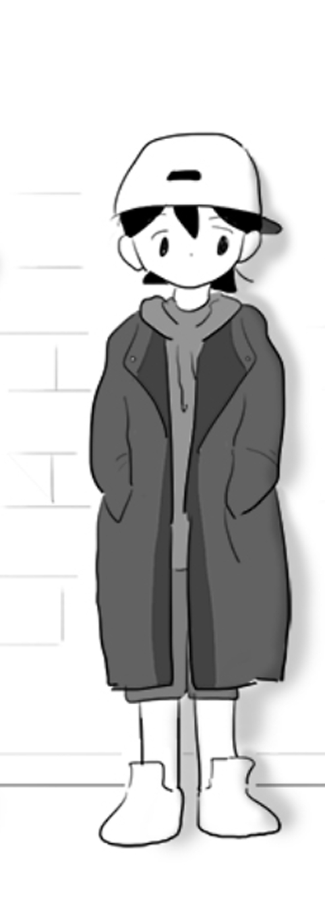

모두 그룹에 속해있다. 나는...?
행복한 가정을 게임으로 배우기는 싫었다. 스위치를 내리면 그것으로 끝인.
나 뭘 잘못한 걸까. 그냥 나인게 잘못인가.
행복한 감정에 자연스러워지는 것이 나에겐 주제넘은 일이란 걸 잊으면 안돼.
나는 그냥 죽은 듯이 살고 싶을 뿐이야. 너무 아픈 말을 뱉는 너의 눈에 띄지 않길 바랄 뿐이야.
어색하게 걷는다는 건 무엇일까? 걷는 데서 어색함이 묻어 나온다는 건 심각한 정도 아닐까? 이미 인간으로서 무언가 결여되었거나 정상이 아니기 때문에 그런 게 걸음걸이에서 나타나는 게 아닐까? 내가 제대로 된 인간이 아니라는 건 예전부터 알고 있었지만 요즘 너무 나태하게 행복을 누렸던 건 아닐까? 사실 모두들 다 알고 있던 내 비정상적인 기운들을 나만 새어 나간지도 모르고 멍청하게 살았던 건 아닐까? 오늘 그 말은 나에겐 거의 사형선고나 다름없는 듯 하다. 인간으로서 실격이라는. 그동안 집행유예였는지도. 덜된 인간인 주제에 슬픔을 느끼다니.
이태양을 좋아한다고 쉽게 말하지 못하는 또다른 이유는 이태양에게 미안해서다. 내가 그 애의 급까지 끌어내릴 것 같으니까. 그게 지금까지 잘해 준 이태양에 대한 예의이기도 하고.
책임지지 않을 거였다면 그렇게 따뜻하지나 말지.
끝까지 넌 네 잘못한 부분보다 네가 아픈 부분만 쓰라려 하는구나.
그런거야 기본적으로 살펴보는 거잖아. 내가 이 그룹에 들어가도 되는지, 살아남을 수 있는지. 너는 살면서 한 번도 고려 안해봤겠지만.
내가 살고 있는 세계는 순정만화 같은게 아니야.
역시 문학만이 구원을 준다.
바람처럼 불어드는 행복 앞에서 나는 속수무책이었다. 항상 철저하게 불행을 예견하던 습관조차 잊을 정도로.
나도 한때는 사람을 낙원으로 삼은 적이 있었다. 다시는 그런 짓 안해. 도망친 곳에 낙원은 없다.
사람을 낙원으로 삼아선 안돼, 사람은 움직이는 거니까. 나는 지속가능한 낙원을 가꾸어야 한다.
내가 다가가지 않으면 아무런 이벤트도 일어나지 않아.
사람이 무너지기 전 지탱해줄 수 있는 사람은 한 사람이면 충분하다. 그때의 나처럼.
누가 됐든... 우리반에 엄석대가 있는 건 싫어.
내가 손을 내밀어야 사람은 손을 잡고, 내 글을 봐달라는 노력을 할 때, 사람들은 보아준다. 근거없는 결과는 없다.
괜찮아요. 아침에 맞는 바람은 더 찰 거예요
가끔은 완벽한 가족 구성원에 대해 생각한다. 모든 구성원의 존재가 행복한 가정의 필수 조건일까? 이보다 완벽한 평화는 없는데...
작가는 죽을 때까지 글을 쓰는 사람이 작가인거래. 우리도 그럴 거 잖아?